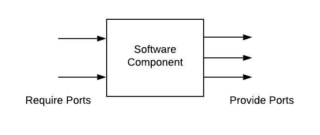

Ports
A SoftwareComponent encapsulates a set of related functions and/or data. The component commmunicates with the outside world exclusively using ports. The ports are a part of the component and represents its interface. In AUTOSAR, this is called the Port Interface
In general, there are two types of ports:
Require Port (R-Port)
Provide Port (P-Port)
For the most part the they are the same, the main difference is the direction of the port.
Port Interfaces
Ports are created from port interfaces. They come in different types.
SenderReceiverPortInterface
ClientServerPortInterface
ParameterPortInterface
ModeSwitchPortInterface
NvDataPortInterface
SenderReceiverPortInterface
The SenderReceiverPortInterface is the traditional interface used for sending and receiving automotive signals. It integrates well with automotive buses such as CAN and LIN (which are primarily signal-based buses).
The RTE function prefixes are:
Rte_Write (P-Port, Non-Queued)
Rte_Read (R-Port, Non-Queued)
Rte_Send (P-Port, Queued)
Rte_Receive (R-Port, Queued)
ClientServerPortInterface
ClientServer ports are used by SoftwareComponents when requesting services located in BSW (usually through service-mapping) or in another SoftwareComponent. The function call can be configured to be either synchronous or asynchronous through configuration.
The RTE function prefixes are:
Rte_Call (R-Port)
For server ports (or P-Ports), the user can select any function name as long as it it’s known by the RTE during generation (we will cover this later).
ParameterPortInterface
Parameter ports are used for parameter data, sometimes known as calibration data. They are usually read-only data values which controls the behavior of SoftwareComponents.
The RTE function prefixes are:
Rte_Prm (R-Port)
ModeSwitchPortInterface
Mode ports are used to react to mode changes in the ECU.
The RTE function prefixes are:
Rte_Mode (R-Port)
Rte_Switch (P-Port)
NvDataPortInterface
The non-volatile data port interface is used exclusively by the NvBlock SoftwareComponent.
ComSpec
The Communication Specification (ComSpec) is used to describe specific communication needs of a port. This can include information such as init-values or queue-length.
For more details about which ComSpecs are supported from Python see the ComponentType API.
Port Creation Examples
Example 1: SenderReceiver ports with single data element
Create components with a single port which contains one data element. Here you can give the ComSpec arguments directly to the port creation function call. Use keyword initValueRef instead of initValue if you intend to use constants as port initialier.
import autosar
def create_workspace_and_packages():
ws = autosar.workspace(version="4.2.2")
package = ws.createPackage('DataTypes', role='DataType')
package.createSubPackage('CompuMethods', role='CompuMethod')
package.createSubPackage('DataConstrs', role='DataConstraint')
package.createSubPackage('BaseTypes')
package.createSubPackage('ImplementationTypes')
ws.createPackage('PortInterfaces', role='PortInterface')
ws.createPackage('ComponentTypes', role='ComponentType')
return ws
def create_data_types(ws):
baseTypes = ws.find('/DataTypes/BaseTypes')
baseTypes.createSwBaseType('uint8', 8, nativeDeclaration='uint8')
implTypes = ws.find('/DataTypes/ImplementationTypes')
implTypes.createImplementationDataType('uint8', lowerLimit=0, upperLimit=255,
baseTypeRef='/DataTypes/BaseTypes/uint8', typeEmitter='Platform_Type')
implTypes.createImplementationDataTypeRef('OffOn_T',
implementationTypeRef = '/DataTypes/ImplementationTypes/uint8',
valueTable = ['OffOn_Off',
'OffOn_On',
'OffOn_Error',
'OffOn_NotAvailable'
])
def create_port_interfaces(ws):
package = ws.find('/PortInterfaces')
package.createSenderReceiverInterface('HeaterPwrStat_I',
autosar.element.DataElement('HeaterPwrStat',
'/DataTypes/ImplementationTypes/OffOn_T'))
def create_components(ws):
package = ws.find('/ComponentTypes')
comp1 = package.createApplicationSoftwareComponent('Component1')
comp1.createProvidePort('HeaterPwrStat', 'HeaterPwrStat_I', initValue='OffOn_NotAvailable')
comp2 = package.createApplicationSoftwareComponent('Component2')
comp2.createRequirePort('HeaterPwrStat', 'HeaterPwrStat_I', initValue='OffOn_NotAvailable', aliveTimeout = 30)
ws = create_workspace_and_packages()
create_data_types(ws)
create_port_interfaces(ws)
create_components(ws)
ws.saveXML('Component1.arxml', filters=['/ComponentTypes/Component1'])
ws.saveXML('Component2.arxml', filters=['/ComponentTypes/Component2'])
ws.saveXML('DataTypes.arxml', filters=['/DataTypes'])
ws.saveXML('PortInterfaces.arxml', filters = ["/PortInterfaces"])
Example 2: SenderReceiver ports with multiple data elements
Create components with a single port which contains two data elements. Here you have to explicitly give a comspec argument containing a list of dictionaries.
import autosar
def create_workspace_and_packages():
ws = autosar.workspace(version="4.2.2")
package = ws.createPackage('DataTypes', role='DataType')
package.createSubPackage('CompuMethods', role='CompuMethod')
package.createSubPackage('DataConstrs', role='DataConstraint')
package.createSubPackage('Units', role='Unit')
package.createSubPackage('BaseTypes')
package.createSubPackage('ImplementationTypes')
ws.createPackage('PortInterfaces', role='PortInterface')
ws.createPackage('ComponentTypes', role='ComponentType')
return ws
def create_data_types(ws):
baseTypes = ws.find('/DataTypes/BaseTypes')
baseTypes.createSwBaseType('uint8', 8, nativeDeclaration='uint8')
baseTypes.createSwBaseType('uint16', 16, nativeDeclaration='uint16')
implTypes = ws.find('/DataTypes/ImplementationTypes')
implTypes.createImplementationDataType('uint16', lowerLimit=0, upperLimit=65535,
baseTypeRef='/DataTypes/BaseTypes/uint16', typeEmitter='Platform_Type')
implTypes.createImplementationDataType('uint8', lowerLimit=0, upperLimit=255,
baseTypeRef='/DataTypes/BaseTypes/uint8', typeEmitter='Platform_Type')
implTypes.createImplementationDataTypeRef('PercentLevel_T', lowerLimit=0, upperLimit = 255,
implementationTypeRef = '/DataTypes/ImplementationTypes/uint8',
offset=0, scaling=0.4, unit='Percent', forceFloat=True)
implTypes.createImplementationDataTypeRef('VoltageLevel_T', lowerLimit=0, upperLimit = 65535,
implementationTypeRef = '/DataTypes/ImplementationTypes/uint16',
offset=0, scaling=1/64, unit='Volt', forceFloat=True)
def create_port_interfaces(ws):
package = ws.find('/PortInterfaces')
package.createSenderReceiverInterface('BatteryStat_I',
[
autosar.element.DataElement('ChargeLevel', '/DataTypes/ImplementationTypes/PercentLevel_T'),
autosar.element.DataElement('VoltageLevel', '/DataTypes/ImplementationTypes/VoltageLevel_T')
])
def create_components(ws):
package = ws.find('/ComponentTypes')
comp1 = package.createApplicationSoftwareComponent('Component1')
comp1.createProvidePort('BatteryStat', 'BatteryStat_I', comspec =
[
{'dataElement': 'ChargeLevel', 'initValue': 255},
{'dataElement': 'VoltageLevel', 'initValue': 65535}
])
comp2 = package.createApplicationSoftwareComponent('Component2')
comp2.createRequirePort('BatteryStat', 'BatteryStat_I', comspec =
[
{'dataElement': 'ChargeLevel', 'initValue': 255, 'aliveTimeout': 30},
{'dataElement': 'VoltageLevel', 'initValue': 65535, 'aliveTimeout': 30}
])
ws = create_workspace_and_packages()
create_data_types(ws)
create_port_interfaces(ws)
create_components(ws)
ws.saveXML('Component1.arxml', filters=['/ComponentTypes/Component1'])
ws.saveXML('Component2.arxml', filters=['/ComponentTypes/Component2'])
ws.saveXML('DataTypes.arxml', filters=['/DataTypes'])
ws.saveXML('PortInterfaces.arxml', filters = ["/PortInterfaces"])
Example 3: ClientServer port
Create an NVM-related client-server interface and use it as both client and server ports.
import autosar
def create_platform_types(ws):
ws.pushRoles()
package = ws.createPackage('AUTOSAR_Platform')
baseTypes = package.createSubPackage('BaseTypes', role = 'DataType')
package.createSubPackage('CompuMethods', role = 'CompuMethod')
package.createSubPackage('DataConstrs', role = 'DataConstraint')
baseTypes.createSwBaseType('dtRef_const_VOID', 1, encoding = 'VOID', nativeDeclaration = 'void')
baseTypes.createSwBaseType('dtRef_VOID', 1, encoding = 'VOID', nativeDeclaration = 'void')
baseTypes.createSwBaseType('boolean', 8, encoding = 'BOOLEAN', nativeDeclaration='boolean')
baseTypes.createSwBaseType('uint8', 8, nativeDeclaration='uint8')
implTypes = package.createSubPackage('ImplementationDataTypes')
implTypes.createImplementationDataType('boolean', '/AUTOSAR_Platform/BaseTypes/boolean',
valueTable=['FALSE', 'TRUE'], typeEmitter='Platform_Type')
implTypes.createImplementationDataTypePtr('dtRef_const_VOID',
'/AUTOSAR_Platform/BaseTypes/dtRef_const_VOID', swImplPolicy = 'CONST')
implTypes.createImplementationDataTypePtr('dtRef_VOID', '/AUTOSAR_Platform/BaseTypes/dtRef_VOID')
ws.popRoles()
ws.pushRoles()
package = ws.createPackage('Predefined_DEV')
package.createSubPackage('CompuMethods', role = 'CompuMethod')
package.createSubPackage('DataConstrs', role = 'DataConstraint')
implTypes = package.createSubPackage('ImplementationDataTypes')
implTypes.createImplementationDataType('NvM_RequestResultType', '/AUTOSAR_Platform/BaseTypes/uint8',
valueTable=[
'NVM_REQ_OK',
'NVM_REQ_NOT_OK',
'NVM_REQ_PENDING',
'NVM_REQ_INTEGRITY_FAILED',
'NVM_REQ_BLOCK_SKIPPED',
'NVM_REQ_NV_INVALIDATED'])
ws.popRoles()
def create_port_interfaces(ws):
package = ws.createPackage('PortInterfaces', role='PortInterface')
portInterface=package.createClientServerInterface("NvM_RequestResult",
errors = autosar.ApplicationError("E_NOT_OK", 1),
isService=True, operations = [
"EraseBlock",
"GetErrorStatus",
"InvalidateNvBlock",
"ReadBlock",
"SetRamBlockStatus",
"WriteBlock"])
NvM_RequestResultType_ref = "/Predefined_DEV/ImplementationDataTypes/NvM_RequestResultType"
boolean_ref = "/AUTOSAR_Platform/ImplementationDataTypes/boolean"
dtRef_const_VOID_ref = "/AUTOSAR_Platform/ImplementationDataTypes/dtRef_const_VOID"
dtRef_VOID_ref = "/AUTOSAR_Platform/ImplementationDataTypes/dtRef_VOID"
portInterface["EraseBlock"].possibleErrors = "E_NOT_OK"
portInterface["GetErrorStatus"].createOutArgument("ErrorStatus", NvM_RequestResultType_ref,
"NOT-ACCESSIBLE", "USE-ARGUMENT-TYPE")
portInterface["GetErrorStatus"].possibleErrors = "E_NOT_OK"
portInterface["InvalidateNvBlock"].possibleErrors = "E_NOT_OK"
portInterface["ReadBlock"].createInArgument("DstPtr", dtRef_VOID_ref, "NOT-ACCESSIBLE", "USE-ARGUMENT-TYPE")
portInterface["ReadBlock"].possibleErrors = "E_NOT_OK"
portInterface["SetRamBlockStatus"].createInArgument("RamBlockStatus", boolean_ref, "NOT-ACCESSIBLE", "USE-ARGUMENT-TYPE")
portInterface["SetRamBlockStatus"].possibleErrors = "E_NOT_OK"
portInterface["WriteBlock"].createInArgument("SrcPtr", dtRef_const_VOID_ref, "NOT-ACCESSIBLE", "USE-ARGUMENT-TYPE")
portInterface["WriteBlock"].possibleErrors = "E_NOT_OK"
def create_components(ws):
package = ws.createPackage('ComponentTypes', role='ComponentType')
comp1 = package.createServiceComponent('ServerComponent')
comp1.createProvidePort('Nvm_PersonalSettings', 'NvM_RequestResult')
comp2 = package.createApplicationSoftwareComponent('ClientComponent')
comp2.createRequirePort('Nvm_PersonalSettings', 'NvM_RequestResult')
ws = autosar.workspace(version="4.2.2")
create_platform_types(ws)
create_port_interfaces(ws)
create_components(ws)
ws.saveXML('ServerComponent.arxml', filters=['/ComponentTypes/ServerComponent'])
ws.saveXML('ClientComponent.arxml', filters=['/ComponentTypes/ClientComponent'])
ws.saveXML('Platform.arxml', filters=['/AUTOSAR_Platform', '/Predefined_DEV'])
ws.saveXML('PortInterfaces.arxml', filters = ["/PortInterfaces"])